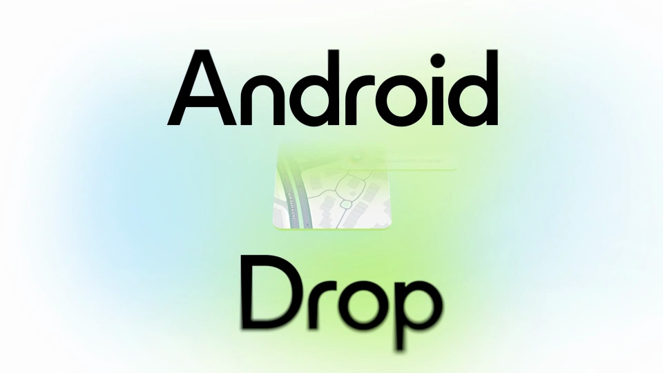
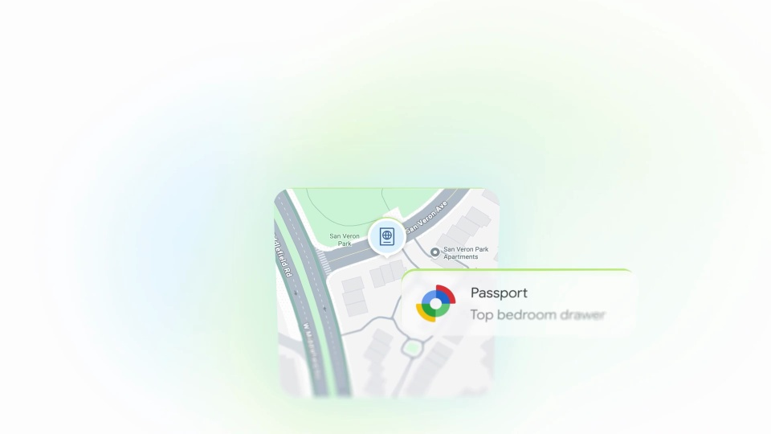
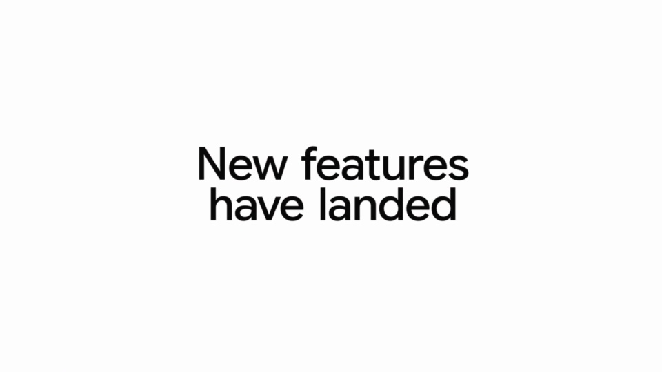

Google / V265
Android Drop — Find Hub, Motion Assist, Gemini
每项更新只用一个主体和一个反馈说清：地图带通知，清单带消息，照片带辅助状态。
构图与编排 可播放 · 可替换内容
整体编排规则示例
查看 HTML 源码
<!doctype html><html lang="zh-CN"><meta charset="utf-8"><meta name="viewport" content="width=device-width,initial-scale=1"><title>Android Drop — Find Hub, Motion Assist, Gemini · sequence</title><style>html,body{margin:0;width:100%;height:100%;overflow:hidden;background:#fbfbff}canvas{display:block;width:100%;height:100%;object-fit:contain}</style><body data-mode="sequence"><canvas width="1000" height="600"></canvas><script src="data.js"></script><script src="common.js"></script><script src="scene.js"></script><script src="bridge.js"></script></body></html>画面元素地图卡通知标签共享清单聊天气泡照片辅助标点
MOTION LANGUAGE
动作与构图
局部动作 · 构图规则
01
三组卡片沿同一中心接续
白色大留白中使用圆角卡，粉蓝光晕停在边缘。主体卡较大，小反馈错位依附在一侧；无衬线文字控制在简短标签和一行说明。
02
让反馈解释主体的变化
让反馈解释主体的变化规则示例
查看 HTML 源码
<!doctype html><html lang="zh-CN"><meta charset="utf-8"><meta name="viewport" content="width=device-width,initial-scale=1"><title>Android Drop — Find Hub, Motion Assist, Gemini · sequence</title><style>html,body{margin:0;width:100%;height:100%;overflow:hidden;background:#fbfbff}canvas{display:block;width:100%;height:100%;object-fit:contain}</style><body data-mode="clip" data-start="1.5" data-end="6"><canvas width="1000" height="600"></canvas><script src="data.js"></script><script src="common.js"></script><script src="scene.js"></script><script src="bridge.js"></script></body></html>地图出现后才带出位置提示，购物清单出现后才带出共享消息，照片出现后才增加辅助标点。每组完成一个可见动作就交给下一组。
03
用三种新场景替换
适合一组小更新。为每项准备主体、触发动作和短反馈，统一卡片圆角与留白，仅通过内容和光晕色区分章节。
SEQUENCE
段落与节奏
点击段落，定位到上方编排示意。



画面参考 · 离散静帧
KEEP THE RELATIONSHIPS
制作其他主题
- 可迁移成三项更新预告，保留主体＋反馈配对。
- 每项只用一个可辨认场景。
制作约束
地图卡 / 通知标签 / 共享清单 / 聊天气泡 / 照片 / 辅助标点
- 每个功能由一个主体卡和一个依附的小反馈组成。
- 三组内容从同一视觉中心接续，光晕颜色随章节改变。
- 只展示功能瞬间，省去导航和登录，把篇幅留给主体与反馈。